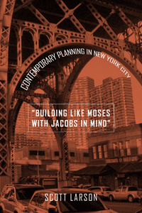

How Bloomberg's urban development relies on a blending of Moses and Jacobs
How Bloomberg's urban development relies on a blending of Moses and Jacobs


 How Bloomberg's urban development relies on a blending of Moses and Jacobs
How Bloomberg's urban development relies on a blending of Moses and Jacobs

|  |
"Building Like Moses with Jacobs in Mind"Contemporary Planning in New York CityScott Larsonpaper EAN: 978-1-43990-970-6 (ISBN: 1-4399-0970-9) |
"‘Building Like Moses with Jacobs in Mind’ is a critical book because the Bloomberg administration's slick public relations have given him support and consensus across the political spectrum for his hugely unfair and unsustainable growth strategy. Larson unravels Bloomberg's skillful manipulation of the myths surrounding Robert Moses and Jane Jacobs."
—Tom Angotti, author of New York for Sale: Community Planning Confronts Global Real Estate and The New Century of the Metropolis: Urban Enclaves and Orientalism
The antagonism between urbanist and writer Jane Jacobs and master builder Robert Moses may frame debates over urban form, but in "Building Like Moses with Jacobs in Mind," Scott Larson aims to use the Moses-Jacobs rivalry as a means for examining and understanding the New York City administration's redevelopment strategies and actions. By showing how the Bloomberg administration's plans borrow selectively from Moses' and Jacobs' writing, Larson lays bare the contradictions buried in such rhetoric and argues that there can be no equitable solution to the social and economic goals for redevelopment in New York City with such a strategy.
"Building Like Moses with Jacobs in Mind" offers a lively critique that shows how the legacies of these two planners have been interpreted—and reinterpreted—over time and with the evolution of urban space. Ultimately, he makes the case that neither figure offers a meaningful model for addressing stubborn problems—poverty, lack of affordable housing, and segregation along class and racial lines—that continue to vex today's cities.
Excerpt available at www.temple.edu/tempress
"‘Building Like Moses with Jacobs in Mind’ is an insightful and nuanced assessment of Moses and Jacobs, moving the discussion of these two major figures beyond the simplistic caricatures and easy dualisms that have characterized so much of the debate to date. Larson’s valuable book admirably succeeds in examining the conflict between Moses and Jacobs not only in its historical context but also in terms of the legacy it created and how that legacy affects contemporary planning practice in multiple and unexpected ways. In sum, the book provides a powerful and fascinating account of the ideas, forces, and ideologies driving planning and development in New York City over a fifty-year period, and it effectively situates the major planning initiatives of the current administration in their historical, ideological, and political-economic context."
—Robert Lake, Professor and Graduate Director in the Edward J. Bloustein School of Planning and Public Policy at Rutgers University
"Larson brilliantly dissects Bloomberg's tenure as Mayor of New York (particularly the first two terms), focusing on how the administration used the prevailing legacies of Moses and Jacobs to get what they wanted done.... [T]his book raises a flag as to what that legacy should be, as well as to what his successor should really focus on."
—A Weekly Dose of Architecture
"The book is an excellent brief about the state of affairs of planning in New York City in the past decade.... there are many interesting insights in this readable monograph. Summing Up: Recommended."
—Choice
"[A] timely study... He adopts a critical lens towards city administrators’ selective calling-upon of the principles of Robert Moses and Jane Jacobs, manipulating the ideologies of each (often wrongly polarized as incommensurate) in service of advancing a bold agenda.... Larson asks his reader to consider not just how Moses and Jacobs insufficiently sell an urban ideal but how focusing on these historical models distracts from engaging with more pressing issues (e.g., ongoing class and racial segregation and insufficient affordable housing) affecting contemporary cities."
—American Studies Journal
"Larson's argument is intricate and the nuances of political power plays can be subtle wherever the names of Moses and Jacobs are invoked.... This book is a highly readable, indeed enthralling, description of how political forces in New York have sensibly co-opted the ideas of these two influential figures of the twentieth century planning in creating their development agenda. Perhaps, Larson's greatest contribution is that he puts the achievements of Moses and the arguments of Jacobs into perspective. This book can be enjoyed by all but those readers already well acquainted with Moses' work and who have read The Death and Life of Great American Cities will gain more from the narrative presented in it."
—Housing Studies
"Larson’s book deftly lays out the selective fusion of Jacobs and Moses – supposed antagonists – as a strategy to legitimate and rally support for property-led economic development.... 'Building Like Moses With Jacobs in Mind' is a provocative exploration of the power of discourse and memory in shoring up political power in a specific urban setting. Larson has written a book about narrative which will itself join the many narratives shaping redevelopment politics in New York City going forward."
—Antipode: A Radical Journal of Geography
Acknowledgments
1. Jacobs versus Moses: A Fight for the City’s Soul
2. The “Patron Saint” and the “Git’r Done Man”
3. The Bloomberg Practice
4. Calls for a New Moses
5. Planning and the Narrative of Threat
6. The Armature for Development
7. Ideas That Converge
8. Ideas That Travel
9. Design as Civic Virtue
10. Building Like Moses with Jacobs in Mind
Notes
References
Index
Scott Larson is an independent scholar who has taught geography and urban studies at Vassar College, Queens College, and Hunter College.
Urban Studies
Political Science and Public Policy
Geography
Urban Life, Landscape, and Policy, edited by Zane L. Miller, David Stradling, and Larry Bennett.
Urban Life, Landscape, and Policy Series, edited by Zane L. Miller, David Stradling, and Larry Bennett, features books that examine past and contemporary cities, focusing on cultural and social issues. The editors seek proposals that analyze processes of urban change relevant to the future of cities and their metropolitan regions, and that examine urban and regional planning, environmental issues, and urban policy studies, thus contributing to ongoing debates.
© 2015 Temple University. All Rights Reserved. This page: http://www.temple.edu/tempress/titles/2252_reg.html.